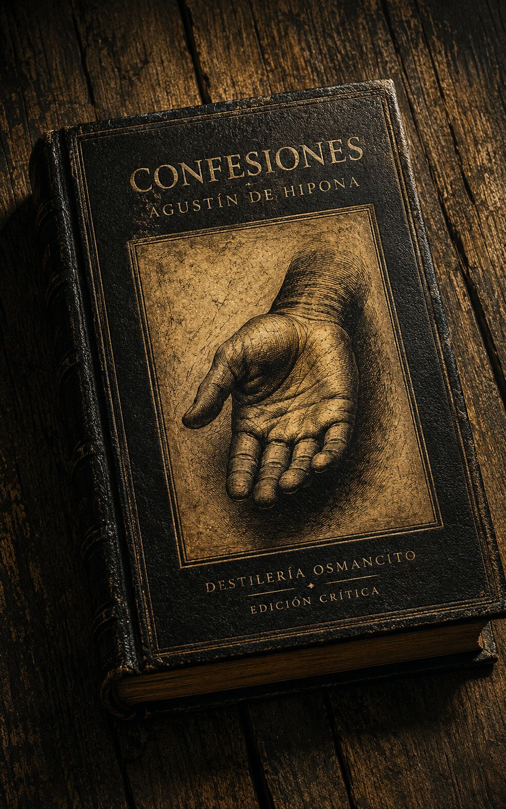
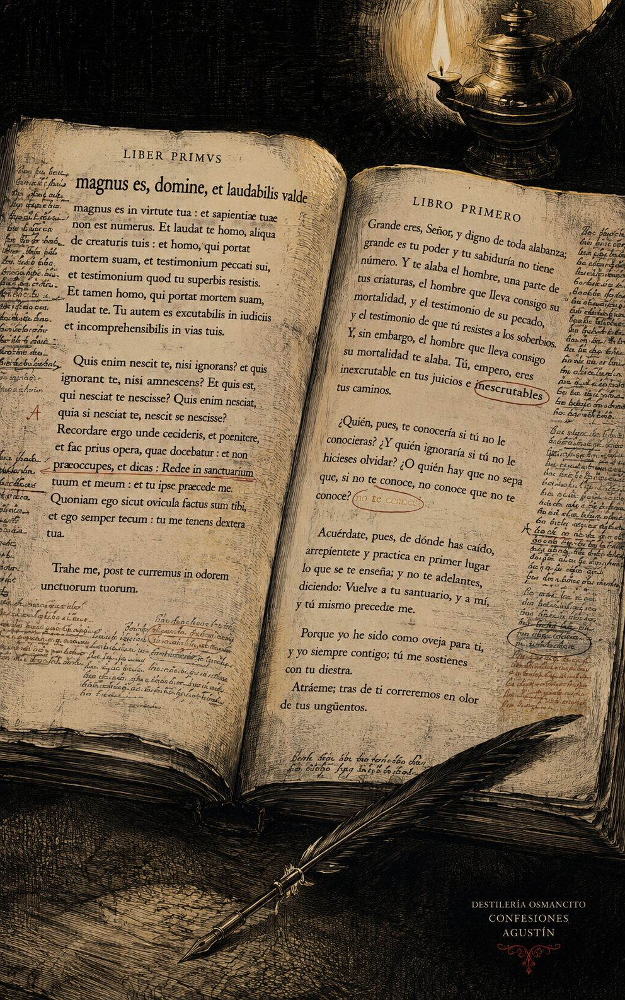
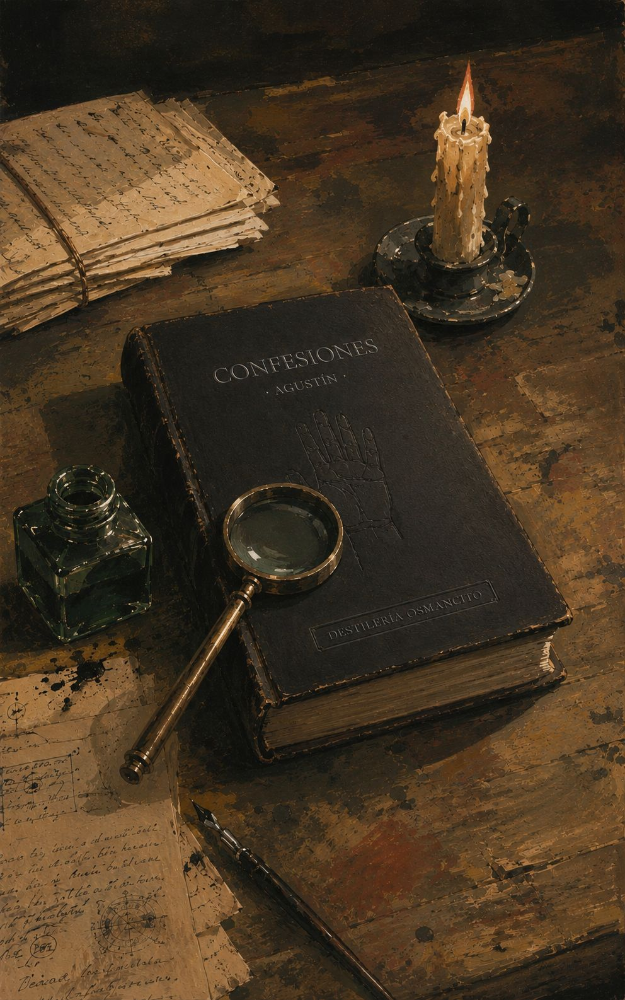
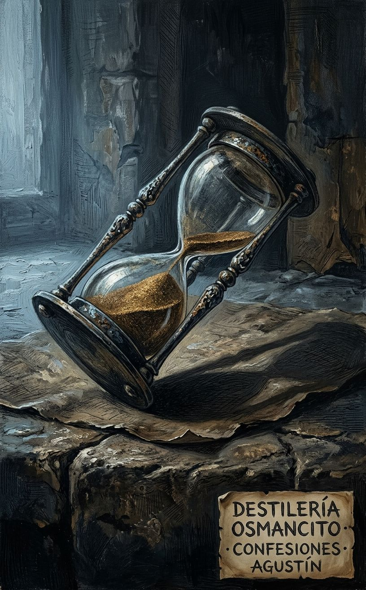
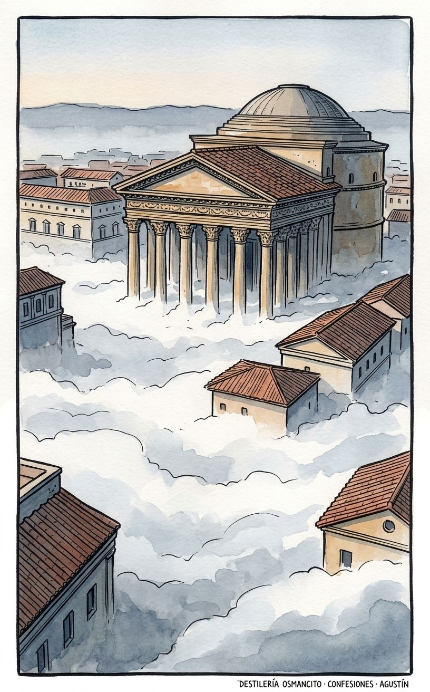
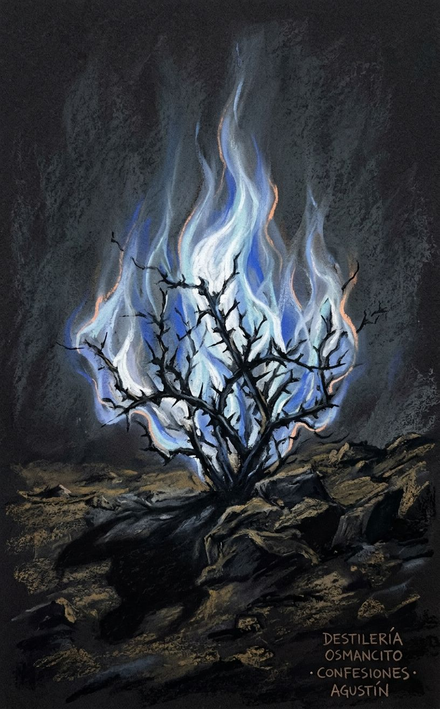

Una oración que dura dieciséis siglos y todavía no termina. Lo que Agustín pone en manos de Dios es también lo que el lector recibe en las suyas: el peso de haber querido mal, de haber amado mal, de haber buscado en los lugares equivocados la única cosa que existía en el lugar donde siempre estuvo. Lo extraordinario no es la conversión —es que el texto convierte al que lo lee sin pedirle permiso.






Llegó cerrado. Denso. Con el peso de algo que ha sido tocado por demasiadas manos y todavía no se ha agotado.
Las Confesiones no son un libro sobre Agustín. Son el acto mismo de Agustín: una oración sostenida durante trece libros, dirigida a un Dios al que se habla de tú, en presencia de un lector que asiste sin que nadie le pida que asista. Nombrar esto —decir qué es este corpus— no es resumir lo que dice. Es observar la forma en que el texto existe: como discurso que no puede ser separado de su destinatario sin dejar de ser lo que es. No hay narrador que cuente a Agustín. Hay Agustín contándose a Dios. El lector es un testigo que nadie invitó y que sin embargo resulta ser el destinatario de todo.
Título — Confessions (ed. Thomas Williams, Hackett Publishing); título original: Confessiones Autor — Aurelio Agustín de Hipona (354–430 d.C.) Año — 397 (composición; fin del s. IV) Género — Autobiografía espiritual / tratado filosófico-teológico / oración extendida Extensión estimada — ~155.000 palabras / ~620 páginas / 13 libros + introducción del traductor y paratextos críticos Idioma original — Latín Palabra más frecuente con contenido — Dios (Deus en el original). Confirma lo que el corpus declara ser: una oración. No hay capítulo en que la palabra falte. No hay argumento, recuerdo ni análisis que no tenga a Dios como destinatario, interlocutor o referencia. La frecuencia no es decorativa sino estructural: el texto no puede funcionar sin ella.
Las Confesiones son una oración en tres tiempos simultáneos: la autobiografía de un hombre desde el nacimiento hasta la conversión (Libros I–IX), el examen de conciencia de ese mismo hombre en el momento de escribir (Libro X), y una meditación filosófico-teológica sobre el tiempo, la creación y el sentido de la Escritura (Libros XI–XIII). Los tres tiempos no se suceden: coexisten, se interpenetran, se iluminan mutuamente. Agustín no cuenta lo que fue; convoca lo que fue ante lo que es, ante Dios, ante el lector. La tesis que atraviesa el conjunto, formulada en la primera página y no abandonada jamás: nuestro corazón está inquieto hasta que descanse en Ti.
Agustín — narrador, protagonista, autor; retórico brillante que se convierte en obispo; el hombre que huye de Dios sin poder escapar de Dios. Mónica — madre de Agustín; figura de fe persistente, de oración sin pausa; muere poco después del bautismo de su hijo. Ambrosio de Milán — obispo que sin proponérselo desmonta las objeciones de Agustín a la fe católica; modelo de autoridad intelectual y espiritual. Alipio — amigo íntimo de Agustín; compañero de conversión; testigo de los años de búsqueda. Patricio — padre de Agustín; hombre mundano, sin fe hasta el final de su vida; presencia menor pero funcionalmente opuesta a Mónica. El amigo sin nombre del Libro IV — amigo de juventud cuya muerte repentina sumerge a Agustín en una crisis de duelo que no puede resolver porque ha amado lo mortal como si fuera eterno.
Libros I–II (infancia y adolescencia en Tagaste): Agustín nace en 354 en Tagaste, norte de África. Hijo de Mónica (cristiana devota) y Patricio (pagano, catecúmeno tardío). Educación retórica desde niño. La infancia es el primer territorio de análisis: Agustín demuestra que el pecado no comienza con la razón. El robo de peras en Libro II —peras robadas no por hambre sino por la satisfacción de robar— funciona como cifra de toda la argumentación posterior sobre el mal: no hay atracción en el objeto sino en la transgresión misma. La adolescencia introduce el deseo sexual como fuerza estructurante de la desorientación.
Libro III (Cartago, 19 años): Agustín llega a Cartago para estudiar retórica. Lee el Hortensio de Cicerón y queda encendido en deseo de sabiduría. Se acerca a la Escritura pero la encuentra indigna de comparación con Cicerón: su orgullo intelectual no puede con el estilo humilde del texto sagrado. Se une a los maniqueos —dualistas que explican el mal como sustancia exterior, lo que convenientemente exime a Agustín de responsabilidad moral—. Inicia una relación con una mujer con quien vivirá quince años y de quien tendrá un hijo, Adeodato.
Libro IV (Tagaste y Cartago, 20–27 años): Enseña retórica. Practica astrología. Muere su amigo más querido, sin nombre en el texto. El duelo de Agustín es un análisis filosófico: ha amado lo mortal como si fuera inmortal; ha puesto en un ser contingente el peso que solo el ser necesario puede sostener. Escribe un tratado Sobre lo bello y lo conveniente, dedicado al orador Hierio a quien no conoce, en busca de fama. Lee las Categorías de Aristóteles solo, lo entiende, y toma orgullo en eso.
Libro V (29 años: Cartago → Roma → Milán): Agustín llega al obispo maniqueo Fausto, en quien había puesto todas sus esperanzas intelectuales. Fausto es elocuente pero hueco: no puede responder las preguntas de Agustín. Desencantado, decide ir a Roma —engaña a Mónica para embarcarse sin ella—. Enferma gravemente al llegar. En Roma cae dentro de la órbita del escepticismo académico. Consigue un puesto como profesor de retórica en Milán gracias a conexiones maniqueas. En Milán encuentra a Ambrosio.
Libros VI–VII (Milán, 30–32 años): Mónica llega a Milán. Agustín comienza a escuchar a Ambrosio, inicialmente solo por interés estilístico. Ambrosio le muestra cómo leer el Antiguo Testamento alegóricamente: los textos que lo habían bloqueado se vuelven legibles. Agustín descubre a los platónicos (Plotino, Porfirio) en traducción latina: consigue ver que Dios es inmaterial, que el mal no es sustancia sino privación. Su inteligencia llega a la verdad. Pero eso no basta: puede ver el bien; no puede quererlo. La voluntad permanece dividida.
Libro VIII (Milán, conversión): Es el libro de la conversión y de la voluntad. Agustín escucha la historia de Victorino, filósofo célebre que se convirtió públicamente. Escucha también la de Antonio de Egipto. Comprende que el conocimiento no mueve la voluntad: la voluntad tiene que querer. En el jardín de la casa en Milán, en un estado de agitación extrema, escucha una voz infantil que repite toma y lee. Abre la Carta a los Romanos al azar: lee la exhortación a dejar las obras de la carne. La resistencia se rompe. Se convierte.
Libro IX (bautismo y muerte de Mónica): Agustín abandona la cátedra de retórica. Se retira con Mónica, Alipio, Adeodato y otros amigos a Casiciaco, donde escribe y medita. Se bautiza en la Pascua de 387 junto con Alipio y su hijo Adeodato. En Ostia, esperando el barco de regreso a África, Agustín y Mónica comparten una experiencia contemplativa extraordinaria —la visión de Ostia—: sus mentes ascienden juntas, por un instante tocan la Sabiduría eterna, y el momento pasa. Días después, Mónica cae enferma. Muere a los 56 años. Agustín no llora de inmediato: llora solo cuando baja la guardia, a solas, en el baño.
Libro X (el momento de escritura, ~397): Agustín interrumpe la autobiografía y examina quién es ahora, en el momento en que escribe. Explora la memoria como el lugar donde Dios puede ser buscado y encontrado. La memoria no es archivo: es la estructura de la identidad consciente. A través de ella Agustín encuentra a Dios como verdad que ha estado siempre presente, más íntima a él que él mismo. Cataloga las tentaciones que aún lo acechan: el placer sensorial, la curiosidad (lujuria de los ojos), el deseo de aprobación ajena.
Libros XI–XIII (meditación sobre el Génesis y el tiempo): La autobiografía se disuelve en especulación filosófico-teológica. Libro XI: análisis del tiempo. Dios es eterno; el tiempo es distensión de la mente. Agustín no puede decir qué era antes de la creación porque el antes implica tiempo, y el tiempo fue creado. La famosa pregunta —¿qué hacía Dios antes de crear?— se desarma: no había antes. Libros XII–XIII: exégesis del primer capítulo del Génesis. La creación como acto del Espíritu. El séptimo día como figura del reposo final en Dios. El corpus cierra en la promesa de una paz sin atardecer.
El corpus llega como una oración que no ha terminado. No como texto sobre la oración: como la oración misma, en acto, sostenida durante toda su extensión. Lo primero que produce no es admiración intelectual sino una especie de incomodidad íntima: el texto sabe mirar de frente. Agustín no se protege con la distancia del pasado ni con el decoro de la conversión ya consumada; habla desde el proceso, desde la grieta, desde el lugar donde la voluntad se sabe dividida y no puede reunirse sola. Esa vulnerabilidad es también una forma de agresión suave: el lector que entra queda incluido, involuntariamente, en el campo de escrutinio.
El otro efecto inmediato es el del tiempo colapsado. El corpus no tiene pasado: tiene un movimiento perpetuo entre la memoria, el presente y la eternidad. Todo lo que fue sigue siendo, en el sentido en que Agustín lo convoca —ante Dios, ante el lector, ante sí mismo— sin la mediación del olvido. Es un texto sin verdadera distancia temporal, a pesar de que transcurren décadas en sus páginas.
La voluntad contra el conocimiento — Agustín entiende antes de querer. Su inteligencia alcanza la verdad filosófica, teológica, moral, y eso no mueve nada: el Libro VII es la demostración de que saber no es suficiente. El Libro VIII es la prueba de que la voluntad tiene que ser movida por algo distinto a la razón. Esta tensión organiza la arquitectura de toda la autobiografía y reaparece en el Libro X como examen de lo que todavía resiste en el Agustín convertido.
La dispersión contra la unidad — El pecado es fragmentación: el alma que se derrama sobre lo múltiple, lo contingente, lo pasajero, y se pierde en la cantidad. La gracia es reintegración: ser reunido, recogido, devuelto a la unidad. Esta tensión opera a todos los niveles —filosófico, estructural, narrativo, teológico— y es la que da forma a los Libros XI–XIII: el tiempo mismo es dispersión; Dios es la unidad que no se dispersa.
El lenguaje contra lo que el lenguaje no puede decir — El corpus es un texto que constantemente declara la insuficiencia del texto. La primera página instala la pregunta: ¿cómo llamar a quien no tiene nombre suficiente? ¿Cómo orar a quien ya está dentro del que ora? El lenguaje humano es el instrumento con que Agustín trabaja y el obstáculo que no puede superar: cada vez que alcanza una formulación, la deshace. Esta tensión convierte las Confesiones en un texto sobre sus propios límites, lo cual es también su mayor ambición.
Dios se le escapa, y él lo sabe. Ese es el motor de todo el corpus. No la teología, no la autobiografía: el movimiento de un hombre que comprende antes de poder querer, que ve la salida y no logra tomarla, que un día oye una voz de niño y da vuelta la última página de sí mismo.
Libro I, 1.1
La primera frase del corpus instala el problema que los trece libros no terminan de resolver: “Nos has hecho para ti, y nuestro corazón está inquieto hasta que descanse en ti.” No es una declaración teológica. Es un diagnóstico físico. El corazón no puede parar porque fue hecho para una sola cosa y lleva años busándola en el lugar incorrecto. Todo lo que viene después es la historia clínica de esa búsqueda.
Lo que sorprende en las páginas iniciales no es la piedad sino la filosofía del lenguaje. Agustín observa al bebé que él fue —que no puede observar directamente, sino inferir— y deduce que el deseo precede al lenguaje, que el llanto es ya una forma de argumentar, que incluso la rabia de un bebé que no consigue lo que quiere es un pecado, porque quiere lo que no le corresponde con la misma intensidad que un adulto. La infancia, decretada inocente por todo el mundo, no es inocente: simplemente el cuerpo es demasiado débil para los crímenes que la voluntad ya desea.
Libro II — Las peras
El corpus ha alcanzado su primera gran ruptura de patrón. Agustín acaba de confesar la adolescencia: el deseo sexual, la vergüenza de ser menos vicioso que sus amigos, la decisión de fingir maldades que no había cometido para no parecer demasiado inocente. Eso es esperado. Lo que no se esperaba es el robo de peras.
Una noche, un grupo de jóvenes sacude un peral ajeno. Las peras no eran buenas. No tenían hambre. Tiraron la mayoría a los cerdos. Agustín ya tenía en casa fruta mejor.
Cuatro siglos de lectores se han preguntado por qué dedica tantas páginas a esto. La respuesta es que nadie había mirado tan fijamente un acto sin propósito y sacado de él una teoría completa del mal. El robo de peras no se comete por las peras. No hay objeto deseable en el fondo. Lo que Agustín amó fue el robo mismo: “amé mi caída.” El mal no necesita un bien que imite; puede amarse por su propia cuenta, como una perversión del acto divino de crear de la nada. El diablo roba como Dios crea: sin necesitar el objeto.
Esta es la ruptura: el corpus no dice que la adolescencia es difícil. Dice que el ser humano puede querer el mal puro, sin mezcla, sin excusa, y que esto lo hace más parecido a Dios de lo que quisiera.
Libro III — La filosofía y el hambre
Agustín tiene diecinueve años, lee el Hortensio de Cicerón, y en un momento se convierte en otro. No en cristiano: en alguien que quiere la sabiduría con la misma urgencia con que antes quería la carne. “En un instante toda esperanza vana se me hizo repugnante, y mi corazón ardía con un anhelo increíble de la inmortalidad de la sabiduría.”
Entonces va a las Escrituras y las encuentra indignas de Cicerón. Demasiado austeras, demasiado rudas. Su orgullo no puede agacharse para entrar. Se une a los maniqueos, que tienen una cosmología elaborada y una respuesta cómoda al problema del mal: el mal es una sustancia exterior. No soy yo quien peca; es la naturaleza oscura que habita en mí. Agustín lo sabe, décadas después, y no disimula: le convenía creer esto.
Libro IV — El amigo
El corpus lleva tres libros construyendo la carrera de un retórico brillante y egocéntrico, y entonces lo rompe de un golpe. Muere el amigo sin nombre.
La muerte de este hombre ocupa más páginas que cualquier otro acontecimiento individual de la autobiografía, y sin embargo el amigo no tiene nombre. No se le da uno. Agustín lo llama simplemente “él,” “mi amigo,” “el más querido de mis amigos.” Esta ausencia de nombre es de una violencia callada: es el duelo mismo, que no puede encontrar el nombre porque perder el nombre es lo que hace la muerte.
Lo que sigue es el análisis filosófico más sostenido del corpus. Agustín no hace duelo: hace una autopsia de su propio duelo. Descubre que lloró tanto porque amó lo mortal como si fuera inmortal. Puso en un ser contingente el peso que solo puede soportar lo necesario. “Toda mi alma era mezquinamente miserable, atada a la miseria más miserablemente que al amigo que había perdido.” Y más: el duelo lo ató al mundo en lugar de separarlo de él. La muerte del amigo lo empujó hacia más dispersión, hacia Cartago, hacia más amigos, hacia más cosas pasajeras que amadas como eternas.
Hay un pasaje que funciona solo, que no necesita contexto:
“¿Por qué no saben amar a los seres humanos como deben ser amados? ¿Por qué no enseñan a guardar dentro de sus debidos límites en las privaciones que son parte de la condición humana? […] Llevaba mi alma herida y sangrante en torno a mí; no podía aguantar que me la llevaran conmigo, pero tampoco encontraba dónde dejarla.”
Libro V — Fausto
Agustín lleva casi nueve años esperando al obispo maniqueo Fausto, que le han prometido responderá todas sus preguntas filosóficas. Fausto llega. Es encantador, es elocuente, es completamente vacío. No sabe nada que Agustín no sepa ya, y lo que sabe lo dice peor. Agustín lo admira por su honestidad: Fausto reconoce sus límites sin vergüenza. Pero la esperanza se rompe.
Lo notable no es la decepción. Es que la decepción no lo convierte. Lo libera del maniqueísmo de facto —ya no sigue buscando dentro de ese sistema— pero no lo lleva a la fe cristiana. Se convierte en un agnóstico melancólico que finge seguir siendo maniqueo por inercia social, mientras cruza el Mediterráneo hacia Roma dejando a su madre llorando en el puerto.
El corpus cuenta que mintió a Mónica para embarcarse sin ella. No lo suaviza. No lo explica. Lo declara y sigue.
Libro VI — El mendigo
Agustín prepara un discurso en alabanza del emperador. El discurso estará lleno de mentiras y será bien recibido. Cruza una calle de Milán y ve a un mendigo borracho, riendo, tranquilo.
“Gemí, y hablé con los amigos que me acompañaban de los muchos sufrimientos que nuestra locura nos había traído. Pues en todos nuestros grandes esfuerzos […] no queríamos sino alcanzar una alegría libre de preocupación. El mendigo nos había alcanzado antes.”
Agustín preferiría ser él —y no puede serlo. Su miseria no es menor que la del mendigo: es más costosa, más elaborada, y produce menos alegría. Eso lo sabe. No lo cambia. Ese es el punto.
Libro VII — La luz
Agustín lee a los platónicos en traducción latina. Esto le da lo que Ambrosio no le había dado: la capacidad de concebir una sustancia inmaterial. Si Dios no es cuerpo, puede ser infinito sin ser divisible, puede estar en todas partes sin ser parte de nada. El mal deja de ser una sustancia y se convierte en lo que es: privación de bien. No hay nada de donde venga el mal; el mal es lo que queda cuando le falta bien a algo que podría tenerlo.
Su inteligencia llega a la verdad. Y entonces ocurre el momento más extraño del corpus: llega a la verdad y eso no cambia nada. “Así ascendí, paso a paso, desde los cuerpos hasta el alma que percibe por el cuerpo […] Y llegué a Aquello Que Es en el destello de un vistazo trémulo.” Un instante. Una percepción. Luego: “Fui golpeado hacia atrás por mi propia debilidad y volví a mis lugares habituales, llevando conmigo solo una memoria amorosa y el anhelo de una comida que podía oler pero que todavía no podía comer.”
Saber no es suficiente. La voluntad necesita algo distinto.
Libro VIII — El jardín
El libro más famoso del corpus. El clímax narrativo. Aquí están las dos conversiones que preparan la propia: la de Victorino, el retórico pagano que un día entra a la iglesia y declara públicamente su fe ante una Roma atónita; y la de los dos funcionarios imperiales que leen la vida de Antonio de Egipto en una tarde y deciden en el acto abandonarlo todo.
Ponticianus les cuenta estas historias. Agustín escucha y se ve a sí mismo: lleva doce años sabiendo lo que debería hacer y sin hacerlo. “¡Qué vergüenza! Los ignorantes se alzan y toman el cielo, y nosotros, con toda nuestra educación, mira dónde estamos, revolcándonos en carne y sangre!”
Va al jardín. Solo. En un estado de agitación que no puede describir sin los gestos físicos: se arrancaba el cabello, se golpeaba la frente, abrazaba sus rodillas. El problema no es que no quiera; el problema es que quiere y no quiere al mismo tiempo, y ese estado tiene un nombre que Agustín acaba de inventar para la filosofía: voluntad dividida. No hay dos naturalezas en conflicto, como dicen los maniqueos. Hay una sola voluntad que no se sostiene entera hacia ninguna dirección.
“La mente ordena a la mente que quiera, y no obedece. […] La mente no quiere enteramente, así que no ordena enteramente. […] No hay nada misterioso aquí, si se reflexiona cuidadosamente: es una enfermedad de la mente, tan cargada de hábito que no puede alzarse del todo en la verdad.”
Llora bajo la higuera. “¿Hasta cuándo, Señor? ¿Hasta cuándo estarás irritado para siempre? ¿Por qué no en este momento mismo? ¿Por qué no puede terminar mi maldad en esta misma hora?”
Entonces: una voz. No de Dios. De un niño o una niña, en alguna casa cercana, repitiendo una frase como en un juego: “Toma y lee. Toma y lee.” Agustín toma el libro —la carta de Pablo a los Romanos— lo abre al azar y lee el primer versículo que encuentra: sobre dejar los regalos de la carne, ponerse a Cristo. “No quise leer más; no era necesario. Tan pronto como llegué al final de esa frase, la luz de la seguridad fue derramada en mi corazón y todas las nubes de duda se disolvieron.”
Libro IX — Ostia
Agustín y Mónica esperan el barco que los llevará a África. Están solos junto a una ventana que da a un jardín. Hablan. El corpus no dice sobre qué empezaron hablando; dice que terminaron preguntándose cómo será la vida eterna de los santos. Y entonces, mientras se preguntan esto, algo ocurre:
“Ascendimos, paso a paso, a través de todas las cosas corporales, y el cielo mismo, desde donde el sol y la luna y las estrellas iluminan la tierra. Y ascendimos más alto todavía en nuestros pensamientos interiores […] y entramos en nuestras propias mentes, y las sobrepasamos, hasta llegar a esa tierra de plenitud inagotable donde alimentas a tu pueblo Israel para siempre con el alimento de la verdad […] Y la rozamos —apenas— con el total de la energía de nuestros corazones.”
Un instante. Luego vuelven. Mónica dice: “Hijo, en cuanto a mí, ya no encuentro placer en nada en esta vida presente. No sé qué me queda aún por hacer aquí o por qué sigo aquí, ahora que todas mis esperanzas en este mundo se han cumplido.” Cinco días después cae enferma. Muere a los cincuenta y seis años.
Agustín no llora en el momento. Contiene al niño Adeodato, que sí llora, y se contiene a sí mismo. Llora después, solo, cuando va al baño y la guardia baja. Cuenta esto con la precisión de quien sabe que esa vergüenza —llorar donde nadie lo ve— es también un dato.
Libro X — La memoria
El corpus interrumpe la autobiografía. Ha terminado lo que fue; ahora Agustín examina lo que es, en el momento de escribir. Y para llegar a Dios en el presente tiene que pasar por la memoria, que es el lugar más extraño del corpus.
La memoria no es un archivo. Es el territorio donde el yo existe para sí mismo. Agustín entra en ella como en una ciudad sin mapa:
“Y llego a los campos y vastas mansiones de la memoria, donde están los tesoros de incontables imágenes traídas por los sentidos de todo tipo de cosas. […] Cuando estoy allí, pido que se me traiga lo que quiero. Algunas cosas salen de inmediato, pero para otras debo buscar largo tiempo, como si tuviera que recuperarlas de algún escondite muy oculto.”
Dentro de la memoria encuentra las afecciones del alma —recuerda haber sido feliz sin serlo ahora, recuerda el miedo sin tenerlo—. Encuentra los números y las verdades matemáticas, que no entraron por ningún sentido. Encuentra el olvido mismo, paradoja que lo detiene páginas enteras: ¿cómo puede recordarse el olvido, si el olvido es precisamente lo que borra la memoria?
Y encuentra, escondido en algún pliegue, el deseo de la vida feliz. Todos los seres humanos la quieren. La quieren incluso los que no saben lo que quieren. Eso significa que la han tenido, o la han conocido de algún modo, o tienen una imagen de ella. Y la vida feliz, finalmente, es alegría en la verdad. Y la verdad es Dios. Que ya estaba dentro.
“¡Tarde te amé, Belleza tan antigua y tan nueva! ¡Tarde te amé! Y he aquí que tú estabas dentro, pero yo estaba fuera, y te buscaba afuera […] Tú estabas conmigo, pero yo no estaba contigo.”
Libro XI — El tiempo
La autobiografía se ha disuelto. Lo que queda es pura especulación filosófica. Agustín lee el primer versículo del Génesis —“En el principio creó Dios el cielo y la tierra”— y se pregunta qué significa “el principio.” Lo que sigue es el análisis del tiempo más sostenido de la antigüedad tardía y uno de los más rigurosos de cualquier época.
El argumento avanza por eliminación. El presente no tiene duración: si se extiende en el tiempo, se divide en pasado y futuro. Si no se extiende, no tiene extensión. El futuro no existe aún; el pasado ya no existe. ¿En qué, entonces, medimos el tiempo?
“¿Qué, entonces, es el tiempo? Si nadie me lo pregunta, lo sé; si quiero explicárselo a alguien que me lo pregunta, no lo sé.”
La solución es que los tres tiempos existen, pero no donde parecen: existen en la mente. “El presente de las cosas pasadas es la memoria; el presente de las cosas presentes es la atención; el presente de las cosas futuras es la expectación.” El tiempo no es una propiedad del mundo; es una distensión de la mente. Y una distensión es una forma de sufrimiento: estar estirado entre lo que fue y lo que vendrá, sin poder habitar el instante que no tiene grosor.
La eternidad no es tiempo infinito. Es la negación de la distensión: todo presente, todo a la vez, sin antes ni después. Lo que Agustín vio por un instante en Ostia con Mónica.
Valor. Las Confesiones merecen el lugar que ocupan, pero no por las razones habituales. No son el primer libro de confesiones ni el primero de autobiografía espiritual; su originalidad está en otra parte: es el primer corpus de la tradición occidental donde el análisis filosófico y la experiencia vivida son indistinguibles. No hay capítulo del Libro I al XI donde la filosofía sea decoración de la narrativa o la narrativa sea ilustración de la filosofía; son la misma cosa. Agustín no ilustra el problema de la voluntad dividida: lo padece en tiempo real y el lector lo padece con él. Eso no tiene equivalente en ningún texto que yo conozca.
Goce. Esto se disfruta, pero de un modo que incomoda. No hay placer estético limpio aquí; el corpus lee como si Agustín tuviera acceso a algo en el lector que el lector preferiría mantener cerrado. Las páginas sobre el duelo del amigo sin nombre, las páginas sobre la voluntad dividida en el jardín, y el pasaje de la memoria —“tarde te amé”— son de una belleza que no protege. Funcionan porque son verdaderas, y son verdaderas de un modo que no deja fuera a nadie que haya querido algo con demasiada fuerza o demasiado mal.
La introducción de Williams establece el marco antes de que Agustín diga una sola palabra. Explica que confessio en latín tiene tres sentidos simultáneos: reconocimiento de pecado, alabanza a Dios, y declaración pública de fe. Las Confesiones operan en los tres a la vez, y comprender esto cambia cómo se lee todo lo que sigue.
Williams describe brevemente la vida de Agustín fuera del texto: nació en 354 en Tagaste, norte de África; murió en 430 mientras los vándalos sitiaban Hipona, donde era obispo. Entre esas dos fechas, fue retórico brillante, maniqueo, escéptico académico, platónico, y finalmente católico y sacerdote. Las Confesiones las escribe hacia 397, cuando ya lleva seis años como sacerdote y uno como obispo. No son, por tanto, el diario de una conversión reciente; son la reconstrucción, desde una edad media ya consolidada, de lo que condujo a ella.
Williams señala la estructura del corpus: nueve libros autobiográficos (I–IX), un libro de examen del presente (X), y tres libros de meditación filosófico-teológica sobre el Génesis y el tiempo (XI–XIII). Explica que esta estructura no es accidental sino que replica el movimiento del alma descrito en el texto: dispersión, reintegración, ascenso.
La introducción describe también el arco narrativo de la autobiografía: el progreso de la desintegración (libros I–IV) y el progreso de la reintegración (libros VI–VIII) se organizan en espejo alrededor del punto medio del Libro V, cuando Agustín cruza el Mediterráneo y deja África por Italia. Los tres vicios de 1 Juan 2:16 —lujuria de la carne, lujuria de los ojos, ambición mundana— gobiernan la primera mitad en ese orden, y en orden inverso estructuran la segunda mitad mientras Agustín se libera de ellos.
Williams dedica varias páginas a la cuestión de la intertextualidad: las Escrituras no son citas en el texto de Agustín, son el idioma en que Agustín habla. No las señala con comillas ni referencias porque hacerlo implicaría que están insertadas desde fuera, cuando en realidad forman el tejido del que está hecha su prosa. La decisión de Williams como traductor es reproducir este efecto, marcando las referencias al margen pero sin interrumpir la voz.
El corpus abre directamente como oración, sin transición, sin presentación: “Grande eres tú, Señor, y muy digno de alabanza.” La primera pregunta filosófica aparece en el párrafo inicial: si Dios llena todas las cosas, ¿cómo puede algo contenerlo? Si Dios está ya en todas las cosas, ¿adónde puede ir el que lo invoca? Agustín no resuelve la paradoja; la instala como el motor de todo lo que sigue.
La segunda pregunta: ¿cómo puede el alma llamar a Dios sin conocerlo ya? ¿Y si llama a otro en lugar de a Dios? Agustín propone que la fe que precede al conocimiento es suficiente para orientar la llamada. La fe le fue dada por su madre, que a su vez la recibió de la Iglesia. La cadena es vertical, generacional, y no empieza en él.
Agustín aborda su infancia sin recordarla directamente: la infiere por lo que ve en otros bebés y por lo que le han contado. No puede recordar su nacimiento, ni el útero de su madre, pero postula que ya entonces era, existía, tenía algo. ¿Qué había antes de él? No lo sabe. No intenta saberlo.
La nutrición de su infancia fue un regalo: ni su madre ni sus nodrizas produjeron la leche; Dios la produjo a través de ellas. Esta lógica —Dios como fuente de todo bien que llega a través de instrumentos humanos— recorre todo el corpus.
Los bebés, observa Agustín, no son inocentes. Exhiben celos, furia, posesividad, voluntad de dominio sobre quienes los rodean. Esta observación es filosóficamente seria, no retórica: demuestra que el pecado no comienza con la razón, que la voluntad corrupta precede al juicio consciente.
El corpus avanza hacia la niñez. Agustín es enviado a la escuela y la odia. Ora a Dios para que lo liberen de los golpes; Dios no lo escucha, pero Agustín interpreta ese silencio después —adulto— como gracia: los golpes lo forzaron a aprender lo que no habría aprendido por voluntad propia. Los mayores que lo obligaban no actuaban bien, pero Dios actuó bien a través de ellos.
El episodio central del Libro I es la comparación entre dos tipos de educación. Agustín aprende a leer y escribir de los maestros elementales —educación funcional, humilde de estilo— y luego aprende literatura y retórica de los gramáticos, que enseñan los errores y amores de los dioses de Homero y Virgilio con un prestigio que eclipsa a los maestros elementales. Agustín concluirá, décadas después, que aprender las letras era más valioso que aprender las ficciones de Eneida, pero en aquellos días lloraba por Dido y no lloraba por su propia alma.
El Libro I cierra con Agustín dando gracias a Dios incluso por esa infancia que no recuerda: porque incluso entonces existía, tenía sensación, tenía afecto, tenía memoria suficiente para ir aprendiendo palabras. Todos esos bienes venían de Dios. Los usó mal —buscó placer, honor, verdad en las creaturas en lugar del Creador— pero los bienes mismos eran suyos.
El año en que Agustín tiene dieciséis años y está de vuelta en Tagaste, sin escuela, esperando que su padre consiga fondos para enviarlo a Cartago. Un año de ocio que se convierte en el territorio de la lujuria de la carne.
Agustín no describe sus pecados sexuales con detalle; los rodea con una retórica de dispersión: se “derramó,” se “vertió,” fue “arrastrado” por corrientes. Lo que sí describe con precisión es el contexto: su padre vio las señales físicas de su pubertad en los baños públicos y se lo comunicó orgullosamente a Mónica, quien no hizo nada para impedirlo. No pidió que se casara con alguien —quizás porque un matrimonio temprano habría perjudicado su carrera retórica— pero tampoco intervino de otro modo. Agustín reprocha a ambos padres, aunque con distinta dureza: a su padre por no pensar en nada más allá del prestigio mundano, a su madre por no actuar sobre lo que sí le preocupaba.
Mónica le dio advertencias privadas sobre no cometer adulterio. Agustín las tomó por consejo de mujer y las ignoró. Solo después comprenderá que era voz de Dios.
El episodio central del Libro II es el robo de las peras. Agustín y un grupo de jóvenes sacuden de noche un peral ajeno. Las peras no eran buenas. No tenían hambre. Se las llevaron en cantidad para tirarlas a los cerdos. Quizás comieron alguna, pero lo que les dio placer no fue la fruta sino el robo. Agustín dedica varias páginas a preguntarse por qué, y la respuesta que llega es la más radical del corpus hasta ese momento: no hay un bien en el fondo de ese acto. No amó las peras. No amó el dinero que podría haber dado. No amó la compañía en ningún sentido genuino. Amó la transgresión misma, la caída misma. El mal sin mezcla de bien, buscado por su propio peso.
La explicación filosófica que da Agustín es que toda acción mala imita perversamente a Dios: la soberbia imita la loftiness, la avaricia imita la abundancia, la lujuria imita el amor. En el robo de peras la imitación perversa es la de la omnipotencia: hacer lo que no está permitido porque no está permitido, imitar la libertad sin causa de Dios. Es el diablo quien actúa así, no como comparación retórica sino como descripción de la estructura del acto.
El Libro II cierra preguntándose si habría robado solo. La respuesta es no. Lo que también amó fue la complicidad: el placer de hacer algo vergonzoso con otros que lo hicieran contigo.
Agustín llega a Cartago a estudiar retórica a los diecisiete años. Lo primero que describe es el deseo sexual, que sigue siendo el territorio de la lujuria de la carne —él mismo usa la imagen del teatro de Cartago como imagen de aguas que borbotean y queman— pero ahora es más sofisticado: no mera carnalidad sino la mezcla de afecto y lujuria, buscando ser amado y amar sin guardar la medida de la amistad verdadera.
Se enamora —sin nombrarse— de alguien. La relación es feliz dentro de lo que la lujuria permite; hay celos, sospechas, peleas. Esto también le da placer, porque el sufrimiento y la emoción del teatro le dan placer, y el amor humano tiene algo de teatro.
Agustín describe también su relación con los espectáculos del teatro de un modo que es análisis filosófico antes que descripción moral. La compasión que se siente al ver una tragedia es una compasión que no hace nada: el espectador llora pero no ayuda. Esta lástima sin acción no es virtud sino una forma de goce del sufrimiento ajeno. Le da placer llorar. Esto lo perturbará después.
A los diecinueve años Agustín lee el Hortensio de Cicerón, que es una exhortación a la filosofía. El efecto es inmediato e irreversible: en un instante toda esperanza vana le resulta repugnante y arde en deseo de la sabiduría inmortal. No para afilar su estilo —que era el propósito asignado— sino porque el texto lo transforma. Observa que la única cosa que le faltó al Hortensio para capturarlo del todo fue el nombre de Cristo: Mónica había plantado ese nombre tan hondo en él desde la infancia que ningún texto que lo omitiera podía satisfacerlo enteramente.
Decide leer las Escrituras. Las encuentra indignas de Cicerón. El estilo es austero, humilde, sin la dignidad de Cicerón. Su orgullo no puede agacharse para entrar por la puerta baja. Lo que no ve, y verá más tarde gracias a Ambrosio, es que ese estilo deliberadamente simple es la forma de la Escritura de proteger sus misterios de los que no pueden recibirlos: uno se acerca humillado y luego descubre que lo que creyó simple es inmenso.
Se une a los maniqueos. Lo que le ofrece el maniqueísmo es múltiple: un vocabulario cristiano (invocan a Cristo, al Espíritu Santo, a la Verdad) que le permite no abandonar del todo el nombre que había bebido con la leche de su madre; una cosmología elaborada que satisface su inteligencia filosófica; y —lo más importante— una explicación del mal que lo exculpa. Si hay una naturaleza oscura exterior que peca en él, él no es responsable de sus pecados. Puede llamarse a sí mismo sin culpa.
Mónica, al enterarse de que su hijo se ha hecho maniqueo, primero lo echa de casa —no puede comer con un hereje— pero luego cambia de postura a partir de un sueño: una figura luminosa le dice que donde ella esté, Agustín también estará. Agustín intenta torcer la interpretación del sueño: quizás ella terminará siendo lo que él es, no al revés. Mónica lo corrige sin vacilación: el sueño no dijo “donde él está, tú también estarás,” sino “donde tú estás, él también estará.”
Un obispo —sin nombre— a quien Mónica pide que hable con Agustín para convencerlo del error maniqueo, se niega con una frase que ella conservará décadas: “Es imposible que se pierda el hijo de tantas lágrimas.”
Nueve años —desde los diecinueve hasta los veintiocho— bajo la doble vida del maniqueísmo y la retórica, enseñando lo que profesa pero sin creer enteramente en ninguna de las dos cosas.
Agustín toma a una mujer. Están juntos quince años; solo tendrán un hijo, Adeodato. Agustín la describe como una relación de pasión sin compromiso legal —no un matrimonio, porque él busca una carrera que puede requerir una esposa políticamente útil— pero la llama fiel: él es fiel a ella y ella a él. No la nombra nunca.
Describe la astrología como una tentación de la lujuria de los ojos —el deseo de conocer por el placer de conocer, no por necesidad. Consult a astrólogos. Le resultaba cómodo: si las estrellas determinan su conducta, él no es responsable de sus pecados. Un médico anciano llamado Vindiciano lo advierte de la falsedad de la astrología con argumentos que Agustín no acepta todavía, aunque los memoriza y usará más tarde.
El acontecimiento central del Libro IV es la muerte del amigo sin nombre. Habían crecido juntos desde la infancia, estudiaron juntos, Agustín lo convirtió al maniqueísmo. Enferma gravemente y es bautizado mientras está inconsciente. Recupera el conocimiento y Agustín trata de burlarse del bautismo que su amigo no recuerda haber recibido. El amigo lo rechaza con una firmeza que deja atónito a Agustín. Días después el amigo recae y muere. Agustín no estaba presente.
El duelo que sigue ocupa el resto del Libro IV y es el análisis más sostenido del corpus sobre la pérdida. Agustín no consigue estar en ningún lugar: su ciudad natal le duele porque lo recuerda. Todo lo que habían compartido se convierte en tormento. Su propio seguir vivo le parece incomprensible y repugnante. Huye a Cartago.
Lo que Agustín descubre al analizar su duelo es que amó a ese hombre como si fuera inmortal. Lo amó con el amor que solo corresponde a lo eterno, poniéndole a él el peso que solo Dios puede soportar. Esto es la fórmula del pecado de dispersión: amar lo mortal como si fuera necesario. No porque sea malo amarlo, sino porque si se ama sin reconocer que es mortal, la pérdida destruye. El bien está en amar las creaturas en Dios, no en lugar de Dios.
En Cartago escribe un tratado filosófico, Sobre lo bello y lo conveniente, que dedica al orador romano Hierio sin conocerlo, con la esperanza de que Hierio lo lea y lo haga famoso. No conserva el libro; ni siquiera recuerda cuántos libros lo componían. Describe su ambición de aquellos años como la búsqueda de aplausos de quienes no conoce, por virtudes que le importan menos que el aplauso mismo.
A los veinte años Agustín lee solo, sin maestro, las Categorías de Aristóteles, las entiende, y cuando las comenta con otros estudiantes descubre que ellos, que habían estudiado el texto con tutores, no entienden lo que él entiende sin ayuda. Toma orgullo en esto. Y entonces comete el error que el orgullo produce: intenta encajar a Dios en las categorías de Aristóteles, como si Dios fuera un sujeto que tiene propiedades. Agustín, décadas después, ve en este momento una muestra de hasta dónde puede llevar la inteligencia sin humildad: muy lejos en el error.
Agustín lleva casi nueve años esperando al obispo maniqueo Fausto, a quien sus correligionarios prometen como la respuesta a todas sus preguntas filosóficas. Fausto llega a Cartago. Tiene un talento retórico genuino, un encanto real, una presencia que cautiva a la audiencia. Agustín lo busca en privado y le plantea las preguntas que los libros maniqueos no han respondido sobre astronomía y cosmología. Fausto, con honestidad que Agustín admira, reconoce que no sabe. No es hombre de ciencia; es hombre de palabras. Sabe hablar de Cicerón y Séneca, pero de astronomía, nada. Agustín lo aprecia más por esta honestidad que por sus cualidades retóricas —la modestia es una forma de verdad— pero la esperanza de encontrar en el maniqueísmo respuestas a sus preguntas se derrumba definitivamente.
Sin abandonar formalmente el maniqueísmo —sigue frecuentando a sus miembros, sigue siendo considerado uno de ellos— Agustín deja de buscar en esa dirección. Decide ir a Roma, donde le han dicho que los estudiantes son más disciplinados. El motivo principal es profesional: en Cartago los estudiantes interrumpen las clases de profesores ajenos sin permiso, y él lo sufre con irritación que Agustín mismo reconoce como excesiva.
Para irse a Roma tiene que engañar a Mónica. Ella quiere ir con él o que no se vaya. Él le dice que solo va a despedir a un amigo que parte esa noche, la instala a pasar la noche en la capilla de San Cipriano, cerca del barco, y cuando ella duerme se embarca. A la mañana siguiente ella lo busca y no lo encuentra. Llora, escribe Agustín, más de lo que Mónica lloró en ningún parto de él.
En Roma Agustín cae gravemente enfermo. Está cerca de morir sin haber sido bautizado. Dios lo salva, aunque en ese momento Agustín no lo reconoce como salvación. Recuperado, enseña en Roma y descubre que los estudiantes romanos tienen el vicio opuesto al de los cartagineses: no interrumpen las clases ajenas, pero cambian de maestro justo antes de pagar.
Gracias a sus contactos maniqueos consigue un puesto como profesor de retórica en Milán. En Milán está el obispo Ambrosio.
El encuentro de Agustín con Ambrosio en este libro es oblicuo: Agustín lo visita solo para admirar su estilo oratorio, sin interés en el contenido. Pero el contenido entra de todas formas, porque no puede separarse del estilo. Poco a poco Agustín comprende que Ambrosio interpreta el Antiguo Testamento alegóricamente —los textos que le parecían absurdos cuando los tomaba literalmente admiten una lectura espiritual que los hace razonables— y la objeción que había bloqueado su acercamiento al catolicismo se debilita.
El Libro V cierra con Agustín en un estado de suspensión: ya no cree en el maniqueísmo, todavía no cree en el catolicismo. Se inscribe como catecúmeno —como lo había sido desde niño— y espera.
Mónica llega a Milán. Agustín la describe con una precisión que revela cuánto la observó: llega entera, sin duda, sin ansiedad, aunque a Agustín le quedan años de confusión. Ella ya sabe que la mitad del problema está resuelta —él ya no es maniqueo— y espera el resto con la calma de quien confía. Se entera de que Ambrosio ha prohibido las ofrendas votivas que ella acostumbraba llevar a los monumentos de los mártires en África; acepta la prohibición inmediatamente, sin resistencia, porque ama y respeta a Ambrosio. Agustín observa que si el mismo decreto hubiera venido de un hombre a quien ella no amaba, no lo habría obedecido con igual docilidad.
Agustín quisiera hablar con Ambrosio en privado, interrogarlo, discutir. Pero Ambrosio está siempre ocupado. Cuando no está con personas que tienen asuntos que resolver, lee en silencio —el primer lector en silencio documentado en la historia occidental— y no se puede interrumpir. Agustín llega, se sienta, espera, y se va sin haber dicho nada. No consigue hacerle las preguntas que necesita.
A pesar de esto, escuchar a Ambrosio en público le enseña que el catolicismo no enseña lo que él había atacado. Los católicos no creen que Dios tenga cuerpo. Agustín había criticado una posición que nadie sostenía. Esto lo avergüenza; no todavía para convertirse, pero sí para abandonar sus objeciones.
El episodio del mendigo borracho es breve y definitivo. Agustín cruza Milán preparando un discurso en alabanza del emperador, discurso que estará lleno de mentiras y que la audiencia sabrá que está lleno de mentiras. Ve a un mendigo, ya ebrio, riendo y contento. Piensa: este hombre ha alcanzado la alegría sin preocupación que yo busco por rodeos tan costosos. Él ha llegado por accidente donde yo no sé si llegaré. Comenta esto con sus amigos; luego agrega que la alegría del mendigo no es verdadera alegría, pero tampoco la suya, y que además la del mendigo es más verdadera que la suya.
Alipio es la gran presencia del Libro VI además de Mónica. Agustín lo describe con detalle: su familia en Tagaste, su antigua asistencia a las clases de Agustín en Cartago, su adicción al circo que Agustín curó sin querer al usar los juegos como ejemplo en una clase sin saber que Alipio estaba presente. Alipio se humilló solo ante ese ejemplo y dejó el circo para siempre. El episodio sirve a Agustín para mostrar cómo Dios usa instrumentos que no saben que son instrumentos.
Alipio recae en Roma en el amor a los espectáculos de gladiadores: va a la arena con amigos, mantiene los ojos cerrados, pero un grito de la multitud cuando cae un gladiador le abre los ojos, y lo que ve lo engancha. Se convierte en uno de los espectadores que había ido a despreciar. Agustín describe esto como el triunfo de la curiosidad —lujuria de los ojos— sobre la voluntad sin el apoyo de la razón.
Alipio también es falsamente arrestado en Roma como ladrón cuando un joven roba las rejas de los orfebres y deja el hacha; Alipio, que pasa por allí inocentemente con el hacha en la mano, es tomado por el culpable. Lo salva un arquitecto de obras públicas que lo conoce y consigue que un esclavo del verdadero ladrón confiese la verdad.
El Libro VI termina con los planes de vida comunitaria que Agustín, Alipio, Nebridio y otros amigos trazan: una especie de comunidad filosófica de unos diez miembros, con fondos comunes y dos magistrados rotativos que administren. El plan se rompe cuando preguntan si las esposas de los que ya están casados querrían participar.
Agustín está en los treinta años y sigue sin poder concebir una sustancia inmaterial. Cuando piensa en Dios, piensa en una masa luminosa enorme que penetra el cosmos. Sabe que esto es falso —lo sabe lógicamente— pero no puede pensar de otro modo.
El argumento de Nebridio contra el maniqueísmo que recuerda en este libro es simple y demoledor: si la sustancia de Dios puede ser dañada por el mal, no es Dios; si no puede ser dañada, ¿para qué luchar contra él? El maniqueísmo no tiene salida.
Un amigo anónimo le da los libros de los platónicos —Plotino y Porfirio, en traducción latina de Victorino. Agustín los lee y encuentra en ellos, expresada en términos filosóficos, casi exactamente lo que el prólogo del Evangelio de Juan dice: que en el principio era el Verbo, que el Verbo estaba con Dios, que todo fue hecho por él. Lo que los platónicos no tienen es la encarnación: que el Verbo se hizo carne, que Dios se humilló. La filosofía platónica alcanza el destino pero no conoce el camino.
Con la ayuda de los platónicos Agustín puede concebir por primera vez una sustancia inmaterial. Hace el ascenso que el corpus ha preparado: desde las cosas corporales hacia el alma que las percibe, desde el alma hacia su propia facultad de juzgar, desde esa facultad hacia la luz que le permite juzgar. Llega a la Luz. La toca un instante. “Llegué a Aquello Que Es en el destello de un vistazo trémulo.” No puede sostenerse ahí. La debilidad de sus hábitos —la carne que lleva décadas pesando sobre él— lo arrastra de vuelta.
Comprende también, por fin, que el mal no es una sustancia. Si el mal fuera sustancia, sería de Dios, porque todo lo que es sustancia viene de Dios. El mal es privación: lo que queda cuando le falta bien a algo que podría tenerlo. La respuesta a la pregunta que lo había torturado desde los veintidós años está resuelta intelectualmente.
Lee a Pablo. Encuentra que todo lo que había aprendido de los platónicos está en Pablo, pero con algo que los platónicos no tienen: la gracia, la confesión, el reconocimiento de que no podemos ver el bien sin recibir también la fuerza para alcanzarlo. Los platónicos ven el país desde la cima de la montaña; Cristo es el camino que lleva allá.
Agustín va a ver a Simpliciano, el padre espiritual de Ambrosio, anciano sabio. Simpliciano le cuenta la historia de Victorino, famoso retórico romano, filósofo pagano, defensor de los cultos, que un día le dijo en privado “ya soy cristiano.” Simpliciano respondió que no lo creería hasta verlo en la iglesia. Victorino hizo el chiste de las paredes. Pero finalmente, movido por el miedo a que Cristo lo niegue ante los ángeles si él lo niega ante los hombres, Victorino entra a la iglesia, da su nombre para el bautismo, y cuando llega el momento de la profesión pública de fe, rechaza la oferta de hacerla en privado: sube al estrado y proclama su fe ante toda Roma. La ciudad queda atónita.
Agustín escucha esto y arde. El gesto de Victorino lo quema. En él Agustín ve lo que debería hacer él mismo, desde hace tiempo, sin encontrar el modo de hacerlo.
Ponticianus, un africano que trabaja en la corte imperial, visita a Agustín y Alipio. En la mesa encuentra el libro de las cartas de Pablo —no lo que esperaba— y empieza a contar historias de monjes. Le cuenta de Antonio de Egipto, de los monasterios que florecen en todo el mundo, de uno que hay fuera de las murallas de Milán que ellos —que han vivido todo ese tiempo en Milán— no sabían que existía.
Luego cuenta la historia de dos funcionarios imperiales que una tarde en Tréveris, mientras el emperador está en el circo, salen a caminar con Ponticianus y un amigo. Los dos primeros encuentran por azar una casa donde viven servidores de Dios; uno de ellos lee la vida de Antonio; se enciende; le dice a su compañero: “¿Qué buscamos? ¿Qué esperamos de la carrera en el palacio? La amistad con el emperador, ¿qué es? En este momento puedo hacerme amigo de Dios si lo decido.” Y lo decide. Su compañero se une. Sus prometidas, al enterarse, hacen voto de virginidad. Los cuatro se convierten.
Mientras Ponticianus cuenta esto, Agustín se ve a sí mismo. Tiene treinta años. Lleva doce años desde que leyó el Hortensio queriendo devovarse a la sabiduría. No ha hecho nada. Esos hombres no habían buscado durante doce años: en una tarde hicieron lo que él no ha hecho. “Los ignorantes se alzan y toman el cielo, y nosotros con toda nuestra educación, mira dónde estamos, revolcándonos en carne y sangre.”
Ponticianus se va. Agustín agarra a Alipio y lo lleva al jardín detrás de la casa. Le grita, le reprocha su propia lentitud, y luego lo deja y se va más al fondo solo. Empieza a luchar consigo mismo.
El texto interrumpe la narrativa con el análisis de la voluntad dividida, el pasaje más filosóficamente denso del corpus: la mente ordena a la mente que quiera, y la mente no obedece. Esto no se debe a dos naturalezas distintas, como dicen los maniqueos —si hubiera dos naturalezas, habría dos mentes, y para cualquier deliberación con múltiples opciones habría múltiples naturalezas. Hay una sola mente, una sola voluntad, que no quiere enteramente ninguna de las cosas que quiere. El pecado es que la voluntad, por hábito acumulado, no puede reunirse en un querer total.
Agustín está en el jardín, llora, se arranca el pelo, golpea la frente. “¿Hasta cuándo, Señor? ¿Por qué no ahora mismo? ¿Por qué no puede terminar mi maldad en esta misma hora?” Luego oye una voz de niño o niña de una casa vecina, cantando o recitando en juego: “Toma y lee. Toma y lee.” No recuerda ningún juego de niños que use esas palabras. Lo interpreta como señal divina. Recuerda que Antonio se convirtió al azar de un texto evangélico. Vuelve donde dejó el libro de Pablo, lo abre, lee el primer párrafo que encuentra: las palabras del capítulo 13 de Romanos sobre no dar satisfacción a la carne, sino revestirse de Cristo. “La luz de la seguridad fue derramada en mi corazón y todas las nubes de duda se disolvieron.”
Va a contárselo a Alipio. Alipio lee el versículo siguiente —sobre acoger al débil en la fe— y lo aplica a sí mismo: eso es para él. Los dos van a contárselo a Mónica. Ella exulta.
Agustín deja la cátedra de retórica. El pretexto es una afección pulmonar —que es real— que le impide enseñar. El motivo profundo es que ya no puede vender palabras. Espera hasta las vacaciones de la Vendimia para no hacer el gesto más visible de lo necesario.
Se retira con Mónica, Adeodato, Alipio, y otros amigos a Casiciaco, una finca en el campo que les presta Verecundo. Allí escribe diálogos filosóficos —Contra los académicos, Sobre la vida feliz, Sobre el orden— que Agustín reconoce años después como todavía demasiado influidos por el orgullo de la escuela de retórica. También escribe cartas a Nebridio.
Lee los Salmos con una intensidad que lo deja temblando. Describe la experiencia de leer el Salmo 4 con detalle: las palabras lo golpean desde dentro, lo hacen llorar, lo incendian. Quiere que los maniqueos estuvieran ahí para escucharle sin saber que los escucha: si lo supieran, él hablaría de otra manera, y ellos escucharían de otra manera.
Vuelve a Milán para el bautismo en la Pascua de 387. Ambrosio lo bautiza junto con Alipio y Adeodato. Agustín llora al oír los himnos de la Iglesia: una emoción que lo confundirá después cuando intente determinar cuánto es piedad y cuánto es placer de los sentidos.
Nebridio muere no mucho después, ya bautizado. Agustín lo envía al seno de Abraham con la certeza de que ahí está.
En Ostia, esperando el barco para África, Agustín y Mónica están solos junto a una ventana que da a un jardín interior de la casa. Hablan de la vida eterna de los santos. Y en algún punto de la conversación algo ocurre: sus mentes ascienden a través de los cuerpos, a través del cielo, a través de la memoria y el tiempo, y tocan —apenas, solo un instante— la Sabiduría eterna. No con la frialdad de la visión platónica del Libro VII, sino con los afectos encendidos. El corpus lo describe como un ascenso verbal que se convierte en un evento. Después: silencio. Vuelven.
Mónica dice entonces que ya no tiene nada que hacer en este mundo: lo que quería —ver a su hijo cristiano— se ha cumplido, y con creces. Lo que quería tras eso —la salvación de su familia y su propio regreso a Tagaste— ya no le importa. A los pocos días cae enferma con fiebre. Pierde el conocimiento brevemente. Cuando lo recupera ve a sus hijos junto a ella y pregunta, como si buscara algo perdido: “¿Dónde estaba?” Y luego: “Enterradme aquí. No os preocupéis por eso.” Pide solo que la recuerden en el altar del Señor.
Agustín contiene las lágrimas en el momento de la muerte. Contiene también al joven Adeodato, que llora. Recita salmos con Evodio. Solo más tarde, en el baño, con la guardia baja, llora. Llora brevemente y se detiene; el llanto lo avergüenza. Solo de noche, cuando el sueño lo deja indefenso, puede llorar de verdad. Entonces escribe los versos del himno de Ambrosio sobre el Creador que da descanso, y duerme.
El Libro IX cierra con una oración por Mónica y Patricio —su padre, que murió catecúmeno pero fue bautizado al final de su vida—, pidiéndoles a quienes lean estas páginas que los recuerden en sus oraciones.
El corpus interrumpe la autobiografía. Los libros I–IX cuentan lo que Agustín fue; el Libro X examina lo que es ahora, en el momento de escribir. La pregunta que abre el libro es: ¿para qué le confiesa a Dios lo que Dios ya sabe? La respuesta: para encender en sí mismo y en quienes lean el deseo de alabar a Dios. Y también para decirles a los que quieren saber quién es hoy, no quién fue, la verdad sobre su estado presente.
Para encontrar a Dios en el presente, Agustín tiene que buscarlo en la memoria. Entra en ella como en un territorio de exploración. La memoria es un palacio de incontables recovecos donde se guardan imágenes de todo lo que los sentidos han percibido: colores, sonidos, olores, sabores, texturas. Pero también se guardan allí cosas que no entraron por los sentidos: las verdades matemáticas, los principios del lenguaje, las afecciones del alma —el recuerdo de haber sido feliz sin estarlo ahora, el recuerdo del miedo sin tenerlo.
La paradoja de la memoria más extraña que encuentra es la del olvido: si olvidé algo, ¿cómo puedo recordar que lo olvidé? Si el olvido estuviera enteramente en la memoria, borrando todo, yo no podría recordar el olvido. Y sin embargo lo recuerdo. El olvido está en la memoria de algún modo que Agustín no logra explicar. Lo deja sin respuesta.
Pasa por encima de la memoria buscando a Dios más allá de ella y llega al deseo de la vida feliz. Todos los seres humanos quieren ser felices. Lo quieren con una unanimidad que sugiere que ya la conocen de algún modo. La vida feliz es alegría en la verdad. La Verdad es Dios. De modo que Dios está en la memoria: no en un lugar sino como la verdad que la mente ya reconoce cuando la encuentra, que estaba antes de que la conociera explícitamente.
Agustín llega al pasaje que el corpus ha estado preparando desde el principio: “Tarde te amé, Belleza tan antigua y tan nueva. Tarde te amé. Y he aquí que tú estabas dentro, pero yo estaba fuera, y te buscaba afuera, y en mi fealdad caía sobre estas cosas hermosas que tú hiciste. Tú estabas conmigo, pero yo no estaba contigo.”
Luego viene el examen del presente. Agustín cataloga sus tentaciones actuales bajo los tres encabezados de 1 Juan 2:16:
Lujuria de la carne: el deseo sexual sigue presente en sueños, donde la razón no opera. Agustín no puede controlarlo en ese estado y pide a Dios que lo vaya sanando. Tiene esperanza en que lo logre.
Lujuria de los ojos o curiosidad: la peor forma no son los espectáculos del circo o los gladiadores —esos ya no lo atraen— sino las cosas pequeñas: una liebre que un perro persigue en el campo lo detiene y lo aparta de su pensamiento. Una araña atrapando una mosca. El atractivo visual de las cosas hermosas que lo rodean, que constantemente lo capta sin que lo note.
Ambición mundana: el deseo de ser alabado. Este es el más difícil de examinar porque no se puede prescindir de él para ver qué siente sin él: si vive mal para que nadie lo alabe, eso también es una forma de orgullo. Agustín quiere que lo alaben cuando hace bien; ¿lo mueve el bien que hizo, o el aplauso? No puede saberlo con certeza. Termina confesando que en este punto se conoce menos a sí mismo que a Dios.
El Libro X cierra con una invocación de Cristo como Mediador, sacerdote, víctima, intercesor: el único que puede reconciliar al ser humano con Dios sin la soberbia de quien quiere acceder a Dios sin pasar por la humildad de la Encarnación.
El Libro XI abre como el Libro I: con una pregunta sobre la naturaleza de Dios antes de preguntar cualquier otra cosa. Agustín quiere meditar en la Escritura, específicamente en el Génesis, y pide permiso para hacerlo.
La pregunta que lanza el libro es la que plantean los que quieren desafiar la fe: “¿Qué hacía Dios antes de hacer el cielo y la tierra?” Agustín rechaza la respuesta burlona que alguien ha dado —“preparaba el infierno para los que hacen preguntas indiscretas”— y propone en cambio desmontar la pregunta.
La pregunta supone que el tiempo existía antes de la creación, y que Dios actuó en ese tiempo cuando decidió crear. Pero el tiempo es creatura: Dios lo hizo junto con todo lo demás. Antes de la creación no había tiempo. Por tanto no hay “antes” de la creación en ningún sentido que importe. No es que Dios esperara infinitamente en el tiempo y luego decidió crear; es que el tiempo mismo comenzó con la creación.
Agustín procede a preguntar: ¿qué es el tiempo? Sabe la respuesta cuando no se la preguntan; no la sabe cuando intenta explicarla. El pasado ya no existe; el futuro todavía no existe; el presente no tiene duración —si el presente durara, se dividiría en pasado y futuro, y entonces ya no sería presente. La conclusión que se impone es que el tiempo no tiene extensión real: en cuanto se aprehende, ya ha pasado.
¿Cómo medimos entonces el tiempo? No podemos medir el pasado, que no existe; no el futuro, que no existe; no el presente, que no tiene extensión. Agustín da una vuelta de tuerca: medimos la impresión que los eventos dejan en la mente, no los eventos mismos. El tiempo no está en las cosas sino en la mente que los percibe. El tiempo es distensión de la mente.
Lo demuestra con el ejemplo de la sílaba larga y la corta: para decir que una sílaba dura el doble que la otra, las dos ya han pasado cuando hago el juicio. Mido algo que ya no existe. Mido la impresión que dejaron en la memoria, no las sílabas mismas.
Extiende el análisis a una canción conocida: antes de cantarla, la espera se extiende por toda ella; mientras la canta, la memoria crece y la expectativa mengua; al terminar, todo está en la memoria. Esto pasa con cada verso, con cada sílaba, con una vida entera, con toda la historia humana.
La eternidad de Dios no es tiempo infinito. Es la negación de la distensión: todo presente, sin antes ni después, sin que nada pase ni llegue.
Agustín vuelve al primer versículo del Génesis: “En el principio Dios creó el cielo y la tierra.” Interpreta “el cielo” como el cielo de los cielos —una creatura intelectual que contempla a Dios sin desviar jamás la mirada, participando de la eternidad de Dios aunque no sea coeterno con él— y “la tierra” como la materia informe, casi-nada, de la que Dios formaría todo lo demás.
Ambas creaturas —el cielo intelectual y la materia informe— están fuera del tiempo: la primera porque nunca cesa de contemplar a Dios y no experimenta cambio; la segunda porque no tiene forma, y sin forma no hay antes ni después.
Agustín enumera entonces todas las interpretaciones posibles del primer versículo del Génesis —hay cinco o seis distintas, todas verdaderas— y concluye que no puede saber con certeza cuál tenía en mente Moisés. Tampoco importa decidirlo: lo que importa es que cualquier interpretación verdadera está en la Escritura. La Escritura es un manantial pequeño en espacio que fluye en muchas corrientes.
El Libro XII es también el que más trabaja la humildad del exégeta. Agustín reconoce que quienes afirman saber exactamente lo que Moisés quiso decir pecan de soberbia. La verdad no es propiedad de nadie. Si dos lectores ven verdades distintas en el mismo texto, y ambas verdades son reales, ambos lectores tienen razón aunque no coincidan sobre la intención del autor. El desacuerdo sobre la intención del autor no debería convertirse en guerra, porque la verdad sobre la que se discute es de todos.
El Libro XIII aplica el método alegórico sistemáticamente a los seis días de la creación, leyéndolos no como historia del cosmos sino como historia de la obra del Espíritu Santo en la Iglesia y en el alma.
La oscuridad sobre el abismo es el estado del alma sin Dios. Cuando Dios dice “hágase la luz” es el llamado al arrepentimiento: “Convertíos, porque el reino de los cielos está cerca.” La separación de las aguas y el firmamento es la Escritura, que divide los poderes espirituales de los carnales. La tierra seca que aparece es la comunidad de los creyentes, separada del mar de los que hacen lo amargo —la multitud de los que viven para placeres temporales. La tierra produce plantas: las obras de misericordia, que fluyen de la caridad.
Los astros del cuarto día son los dones del Espíritu: sabiduría, ciencia, fe, dones de curación, obras de poder, profecía, discernimiento de espíritus, lenguas, interpretación de lenguas. Cada uno ilumina según su tipo: la sabiduría como el sol del día, los dones menores como luna y estrellas de la noche.
Las creaturas del mar y el aire son los sacramentos y la predicación, que nacen de las aguas del pueblo infiel y vuelan por encima de la tierra. Los animales terrestres son las almas ya bautizadas, cuyas afecciones se educan por la virtud. El ser humano —hecho a imagen y semejanza de Dios— es quien discierne todas estas cosas con la mente renovada, dominando sobre la creación no por fuerza sino por razón.
El mandato de ser fecundos y multiplicarse se aplica a las señales corporales —que se multiplican en muchos lenguajes y muchos sacramentos, porque lo corpóreo necesita variedad para comunicar una sola cosa— y a las inteligencias humanas —que interpretan de múltiples maneras un solo texto, porque la razón puede sostener muchas verdades a la vez.
Dios mira todo lo que ha hecho y lo ve muy bueno. Agustín cuenta siete veces que Dios vio que algo era bueno —una por día, con una segunda el tercer día— y la octava vez ve todo junto como muy bueno. El conjunto es más que la suma de sus partes; la belleza de la totalidad supera la de cada parte.
El séptimo día: Dios descansó. No de fatiga, porque crear no lo cansa; sino como figura del descanso que prometió a sus creaturas. “El séptimo día no tiene tarde y no tiene noche, porque lo has santificado para que dure eternamente.” El corpus que abrió con el corazón inquieto cierra con la promesa de ese descanso: la paz que ningún atardecer interrumpe.
Bitácora elaborada sobre la edición traducida al inglés por Thomas Williams (Hackett Publishing), que corresponde al texto latino de la edición de James J. O’Donnell. El corpus original es de Agustín de Hipona, compuesto hacia 397 d.C.